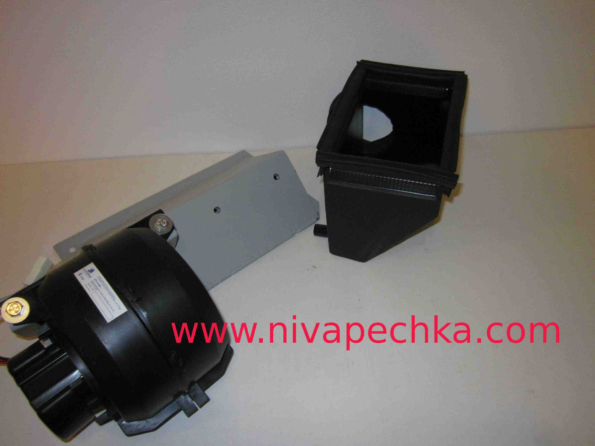

Нива печка 2108 окрашеный корпус в сборе с мотором вентилятора 2
Обновлено:
Если вы здесь, значит у вас есть автомобиль Нива :-) . И значит у вас есть вопросы по вентиляции и обогреву в салоне Нивы. Если вы еще не переоборудовали штатный отопитель в Ниве, то наш сайт поможет вам в этом деле. Когда-то любой владелец Нивы задается вопросом - что делать со штаным вентилятором отопителя? Вентилятор отопителя шумит, у него низкая производительность, к нему неудобно добираться для его ремонта, всего две скорости, в мороз из-за плохой вентиляции окна в салоне Нивы затягивает инеем. И эти недостатки присутствуют на любой модели Нива 2121 21213 21214 2129 2131. Причем независимо от года выпуска и варианта исполнения, будь то карбюраторная Нива или инжекторная Нива.

Устанавливаем Нива печка 2108 окрашеный корпус в сборе с мотором вентилятора 2
Для решения этого вопроса предлагается установить вентилятор отопителя 2108 в печку Нива.
В принципе установка улитки зубильного вентилятора отопителя в Ниву посильна любому владельцу русского джипа.
Для этого в сети есть все чертежи воздухозаборника для установки вентилятора 2108 в Ниву.
Так же потребуется пара недель времени, металл, угловая шлифмашинка, сварка, сколько-то потраченных нервов,
потому-что с первого раза размер, как всегда, будет не тот. Необходимо также позаботится о месте крепления резистора
отопителя, изготовить жгут для подключения вентилятора 2108, укомплектовать всеми болтиками, переключателями
и т.д. и т.п. Для любителей творить своими руками это доставит немало удовольствия, особенно, когда
новая Нива печка заработает с вентилятором от 2108!Нива печка 2108 окрашеный корпус в сборе с мотором вентилятора 2